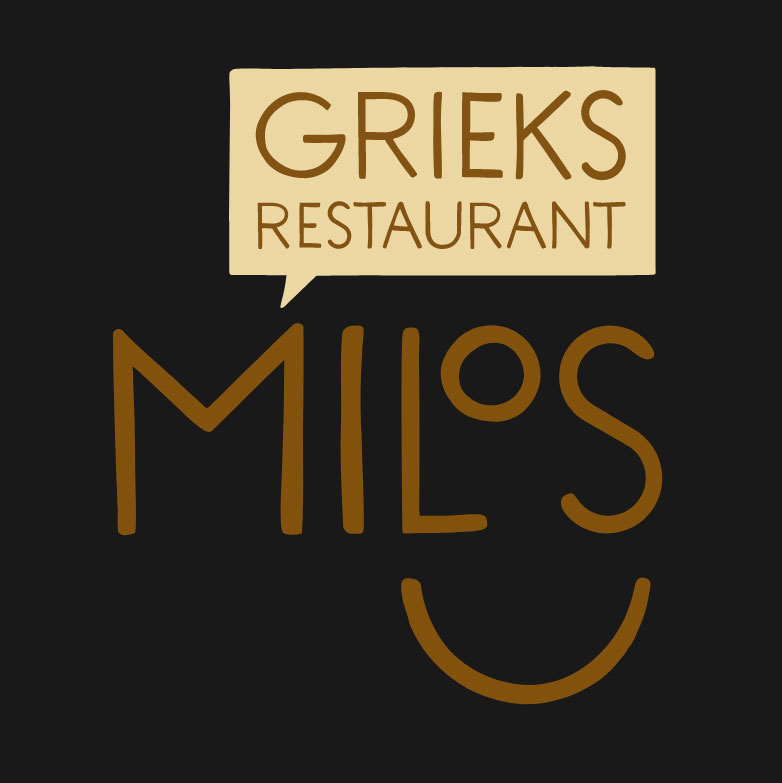

Gewoon goed Grieks eten, maar dan met een glimlach.
Grieks restaurant aan de Laan van Wateringseveld in Den Haag. Kom aan tafel, of laat het thuisbezorgen.

Welkom bij Milos!
Een Griek die de gerechten serveert die je verwacht bij een goede Griek. Hier niets nieuws onder de Griekse zon.
Wel hebben wij een belangrijk doel: dat jij met een glimlach binnenkomt en dat die niet meer verdwijnt totdat je weer thuis met een tevreden grijns op de bank ploft.

Liever thuis op de bank?
Milos bezorgt van maandag tot en met zondag, 's avonds, in de regio Den Haag. Bestellen kan tot 20:30 uur.
- Gratis bezorging bij een bestelling vanaf €25
- Op speciale (feest)dagen kan dit afwijken
Reserveer een tafel
Kom gezellig eten bij Milos. Bel of mail ons voor een tafel.
Adres
Grieks Restaurant Milos
Laan van Wateringseveld 69
2548 BK Den Haag